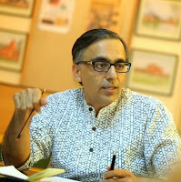

| Home | About School | Alumni | Annual Day | School Activities | About Us |
|---|
| About Us |
|---|
The Fabindia School is managed by a not-for-profit Society called the Bhadrajun Artisans Trust, registered with the Registrar of Societies in Delhi) The Bhadrajun Artisans Trust (BAT) was established by William and John Bissell to build social development programs with a focus on education and crafts.
| Governing Body |
|---|
Members Of The Society
1) Mr Sandeep Dutt - Chairman
2) Ms Prableen Sabhaney - Treasurer
3) Ms Poonam Singh Chauhan - Secretary
4) Mr Ravi Kaimal
5) Mr Rajkumar Rodla
6) Dr Babli Moitra Saraf
7) Ms Anjana Batra
Members Of The Fabindia School
1) Sandeep Dutt - Chairman, Bhadrajun Artisans Trust
2) Rajeshree Shihag - Secretary (Principal, The Fabindia School)
3) Ramesh Choudhary - Parent Representative
4) Kamlesh Soni - Parent Representative
5) Yogendra Singh - Alumni President
6) Usha Panwar - Teacher Representative
7) Rajeshwari Rathore - Teacher Representative
Chairman
Sandeep Dutt, Chairman of the Bhadrajun Artisans Trust, is leading the quest to deliver excellence in school operations, involving the community and establishing a sustainable model for providing good education in India. His belief is that the happiness of the people of Bali village, is in our hands and we must do all to help them live their dreams, by providing the best possible education for their children. Taking ahead the vision and mission of the charity, he is working to provide affordable quality education in rural India, by putting in place good systems, offering best in class training and giving scholarships to the needy.
"I see the possibility of a nation where every school offers young people the opportunity to be rewarded for challenging themselves, rewarded for engaging with adult mentors, rewarded when finishing school, and rewarded for giving back to their communities. I believe we can help connect young people with new opportunities to change their world. " - Sandeep Dutt
Principal
 Rajeshree Shihag - Principal, The Fabindia School, believes creativity is much more than just a skill. She is committed to introduce skills at a young age to promote entrepreneurship. She loves to inspire, engage, and encourage students by divulging creative thinking and problem-solving abilities to bring out the best learning in and out of the class rooms.
Rajeshree Shihag - Principal, The Fabindia School, believes creativity is much more than just a skill. She is committed to introduce skills at a young age to promote entrepreneurship. She loves to inspire, engage, and encourage students by divulging creative thinking and problem-solving abilities to bring out the best learning in and out of the class rooms.
With a Masters degree in English and Psychology, she did her undergraduate work in Physical Education (Swimming Specialization) and began her career at The American Embassy School, New Delhi. She has worked as an educator at schools like Mayo College Girls School, Ajmer, Pathways World School, Gurgaon and The Indian High School, Dubai.
Her Moto is collaborative school environment, creating successful teachers and students by partnering with parents and community to enriching the experience of learning.
Time Line
Fast Facts
Contact Us
Principal The Fabindia School The Fabindia School P.O. Box 1, Bali, District Pali, Rajasthan 306701, INDIA Phone: (+91-2938) 222168 Email : info@fabindiaschools.in principal@fabindiaschools.in rsg@fabindiaschools.in
Sandeep Dutt Chairman,The Fabindia School Chairman,Bhadrajun Artisans Trust The Studio, FF 86A, Shahpur Jat, Khel Gaon Marg, New Delhi 110049, INDIA Email : chairman@fabindiaschools.in
| Bhadrajun Artisans Trust | The Fabindia School | My Good School | Green School Programme | School`s Facebook Page | Brewing knowledge |
|---|
Developed by :-Rakesh Suthar XIth
©Copyright-2019 The Fabindia School (All Rights Reserved)